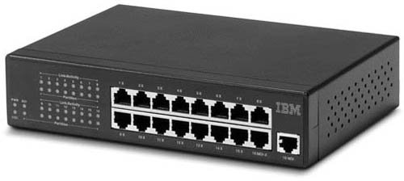
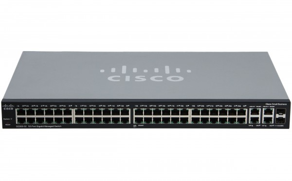

> Hoy en día se ofrecen unos estándares de calidad bastante buenos por parte de todas las marcas, pero hay marcas que ofrecen un software mejor o un sistema de seguridad más avanzado, ahí es dónde veremos la diferencia.
Linksys https://www.linksys.com/es/
D-Link https://eu.dlink.com/es/es
TP-LINK https://www.tp-link.com/es/
Cisco https://www.cisco.com/c/es_es/index.html
> Algunas de los mejores switches que podemos encontrar actualmente (ya que los hubs están obsoletos) son:
NETGEAR Nighthawk SX10 – 199,0€
D-Link DXS-1100-10TS – 822,71€
Edimax XGS-5008 – 588,09€
Cisco SG550XG-24T – 2592,68€
| HUB IBM Y SWITCH CISCO | |
|  |  |